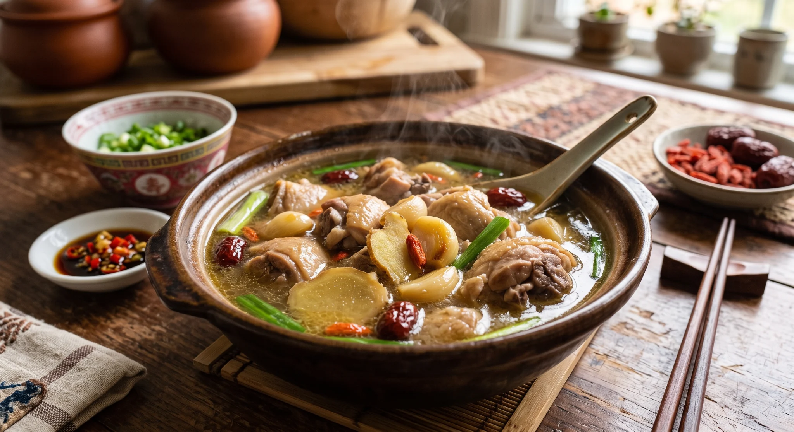
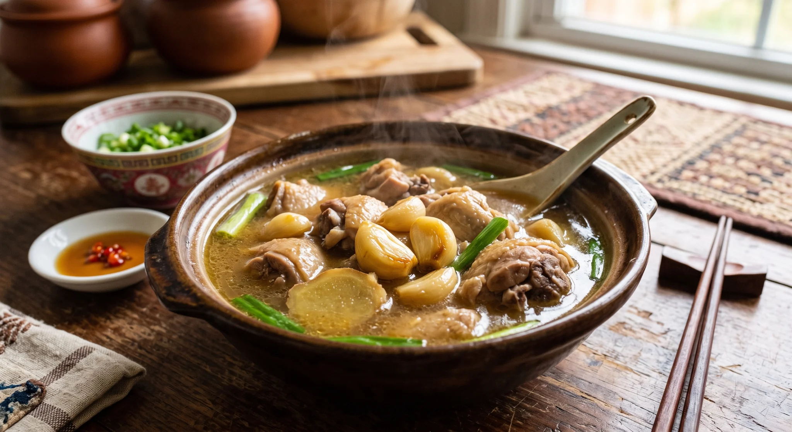
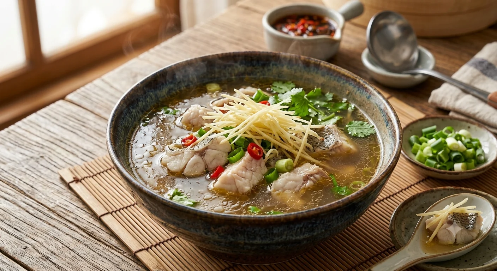

Your comfort bowl
Ginger Sea Bass Soup
A clear fish broth with fresh ginger, scallion, and a clean finish. Light enough for a tired day and warm enough to settle into.
- Character
- Clean and bright
- Best moment
- Quiet afternoons
- Simmer
- 45 minutes
Taiwanese comfort soups
Six slow-simmered soups inspired by familiar ingredients, generous kitchens, and evenings that deserve a softer ending.

Our story
Garlic softens. Ginger warms the oil. Roots and herbs give the broth their time. By the time you sit down, the room already feels different.
Warm Table is a fictional Taiwanese soup house inspired by the bowls people reach for when the weather changes, work runs late, or home feels a little too far away.


Soup finder
Choose a feeling and we will suggest one bowl from the kitchen.
Your comfort bowl
A clear fish broth with fresh ginger, scallion, and a clean finish. Light enough for a tired day and warm enough to settle into.
Come in from the cold
18 Lantern Street · Tuesday–Sunday · 11:30 AM–9:00 PM